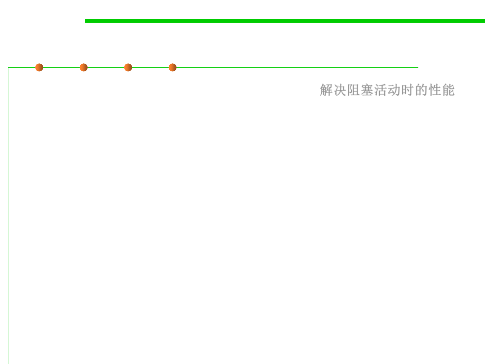

Why use threads?
10.1 Concurrency and Thread-Safety
▪ Performance in the face of blocking activities 解决阻塞活动时的性能
– Consider a web server
▪ Performance on multiprocessors
▪ Cleanly dealing with natural concurrency
▪ In Java threads are a fact of life
– Example: garbage collector runs in its own thread
Number of Threads
1
2
3
4
Seconds to run
22.0
13.5
11.7
10.8